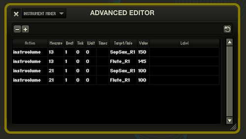

Advanced
Advanced Editor

If you really want to fine-tune your editing (as well as tweak and modify the pre-programmed edits for your show), the Advanced Editor is an extremely powerful tool. Any of the editing shortcuts we have outlined above will create one or more entries in the Advanced Editor, and it is entirely possible to create the exact same edits manually using only the Advanced Editor. However, you should use caution when making these edits. Be sure to back up your show first!
As a general rule, if you can make an edit using the shortcuts for each window that's what you should do.
Editing with the Advanced Editor
When you enter Edit Mode, you will notice two buttons appear at the top of the Advanced Editor window: a minus (-) and a plus (+). These buttons will remove the currently selected edit, or create a new edit from scratch. You can also double-click on any field within an existing edit to modify its value.
By default, a new edit will be created using the location of the playhead cursor in the Timeline. You can manually change the location using the fields in the Advanced Editor. In fact, you will notice that using the Timeline only allows locations to be precise down to a certain level (i.e., quarter notes in a 4/4 time signature, or eighth notes in a 6/8 time signature). If you need your edit to take place "between beats", you will need to fine-tune your edit using the measure-beat-tick fields in the Advanced Editor.
Measure, Beat, Tick
Because Sinfonia is a computer program, sometimes you need to think of music in the way that a computer would. The measure-beat-tick location concept is one such example. The first two fields should make sense to any musician. "Measure" is the bar number, and "Beat" is the beat number within the bar. "Tick" might be a new concept, and it represents the location in between beats. A single tick is the smallest possible subdivision of the beat, from Sinfonia's viewpoint.
A single quarter note has 480 ticks.
A single eighth note has 240 ticks.
A single sixteenth note has 120 ticks.
..and so forth.
So if you are in 4/4 time signature and you need to place an edit at bar 17 on the 4th sixteenth note of the 2nd beat, your measure-beat-tick fields would read:
| measure | beat | tick |
| 17 | 2 | 360 |
We enter 360 for the tick field because that is exact location of the 4th sixteenth note within that beat. The size of the sixteenth note is 120 ticks, and 120 * 3 is 360. We use 3 as a multiplier since that is the number of sixteenth notes that have passed at that point.
Wait, Times
These fields correspond to the Wait and Times features of edits as described in the [link] Editing with Navigation section.
Target/Info, Value
These fields are context dependant. They will have different values for different types of edits. See the sections on types of edits below for more information.
Label
This field is mostly for personal reference. You can enter whatever you would like here.
Types of edits
A tempo
When Sinfonia® encounters an a tempo command, it will reset the tempo clock to the preprogrammed tempo. This can be useful if you want to perform an extreme ritardando section of music followed by an quick shift back to the original tempo. Without the atempo action, Sinfonia® would take a few taps to realize your intentions and catch up. The atempo action allows you to give Sinfonia® a "heads-up".
Leave target and value blank for a tempo events.
Attacca
The attacca action allows you to segue between two songs without stopping. Usually this happens at the end of a given song such that the music flows from the end of one song into the beginning of the next song. However it's possible to place attacca anywhere in a song and to segue into any song in the show. Place the attacca action at the point you wish to segue with the destination song as your target. The available choices will appear in a drop down list when you get to the target field.
Leave the value field blank on attacca events.
Please note - it is not possible to use the Wait field with an attacca. If you need to jump to a different song in the middle of a repeated section, you should use a hotkey relocate. See [link] hotkeys for more information.
Cut
The cut action is a relocate action, usually used to skip sections of music. Place the cut action at the desired jumping point with a target destination measure number. If you want to cut to a point mid-measure, enter the target as measure:beat:tick (for example, a cut to beat 2 of measure 4 would have 4:2:0 as the target.) Leave the value field blank.
Cutoff
This type of edit is fairly rare to program. It is useful if you have sustained notes that you would like to stop sounding at a specific spot. Used in conjunction with a Pause edit you can create a "caesura" at any point in the music, such as if you would like to add dialogue "in the clear" during an instrumental section.
Hotkey
For hotkeys, a new field is available - the Target Type. This corresponds to the type of hotkey you would like to create. For more information on hotkey types, please see the [link] Hotkey section. Please note, it is much more straightforward to create hotkeys using the Hotkey window.
Instrvolume
This type of edit corresponds to changes made to the default instrument volume with the Instrument Mixer. The Target is the name of instrument, and the Value is the percent amount of change. A value of 0 means the instrument is essentially muted, and a value of 100 means the instrument plays at the default volume. A value of 200 means that the instrument will play twice as loud. You can also set the value to above 200 using the Advanced Editor.
Muteinstr
This changes the mute setting on the instrument specified in the Target field. A Value of "true" means that the instrument is muted, and "false" means it is un-muted. Note that a mute setting only carries to the end of the current song, so when you use a Global Edit to mute an instrument for an entire show, you are essentially creating muteinstr edits at the beginning of every song. This is helpful to remember when you would like an instrument to play only at a specific spot within a single song. It is faster to create a global muting, and then unmute the instrument at that particular spot.
Pause
Sinfonia® will pause when it arrives at this action event. Forward motion of the song will stop, but whatever notes were playing when you arrived at the pause event will continue to play until you give Sinfonia® further instructions (like additional taps or a cut-off command from the piano or typewriter keyboard). Like Stop, the tempo clock will freeze so that Sinfonia® doesn't think you have shifted to a very slow playing pattern. Pause events can be useful in musical fermatas or rubato passages.
Please note - a pause event will take effect before the notes at the location play. If you want to create a "fermata" at a specific location, the pause action needs to take place at the end of the note.
Pause events do not have a target or a value. Leave these fields blank when creating pauses.
Pref
There are only two types of "pref" edits that you should encounter (and it is a good idea to contact the Sinfonia develepors if you are intending to make these edits). Both pref edits deal with how Sinfonia treats CC64 events (the sustain pedal) when a relocate happens. By default, Sinfonia will "turn off" the sustain pedal on a relocate. By setting either of these to "true" for a region, Sinfonia will keep the sustain pedal through a relocate.
- relseqnochase is for relocates between songs
- relocatenochase is for relocates inside a song
Relseq
The relseq action allows you to go immediately and automatically to a new song from a specific point in the current song. When the relseq is performed, Sinfonia® will relocate to the selected song, stop and wait for further instructions (i.e. tap, go, etc.). Place the relseq action at the point you want to switch songs. The target will be the new song to which you wish to relocate. When creating or editing relseq actions, a drop down list of the various songs in the show will appear when you get to the target field. Click on your target choice.
Leave the value field blank on relseq events.
Repeat
At the location specified in Measure/Beat/Tick, Sinfonia will jump to the target location. The target must be earlier in the song than the location of the edit.
Reset
For actions that have either wait or times arguments, the actions will stop functioning or will function differently based on the number of times Sinfonia has passed. If you have a repeat to measure 10 that lives at measure 21 and it has a times of 2, then Sinfonia will relocate to measure 10 the first two times it hits measure 21 and ignore the command on the third and subsequent times.
A reset action will reset all the action counters to their original values. So if Sinfonia encounters a reset action and then relocates to places where there are previously expired actions, Sinfonia will perform these actions as if they are being passed for the first time.
Seq
The seq action is used to trigger a target external sequence. An external sequence is a little musical snippet that plays at a separate clock, outside of the meter and tempo controls of the primary sequence. An example might be a special drum fill or horn flourish. Most often these external sequences are triggered by hotkeys, so they can be cued in real time by a particular stage action. However, The 'seq' metaevent allows you to program them to occur at a specific location.
Stop
When Sinfonia® arrives at a Stop action event, it will stop. Notes will cut off and the tempo clock will halt so that Sinfonia® will not think you are switching to an extremely slow play tempo (as it would if you simply stopped playing). A stop metaevent is equivalent to hitting stop on the piano or typewriter keyboard. This might be useful if you want Sinfonia® to stop at a specific spot for a bit of stage action.
Stop events do not have a target or value. Leave these fields blank when creating stops.
Tempo
If Sinfonia is in Play mode, it will follow the tempo specified by tempo edits. You will notice that every song has many pre-programmed tempo events. The Target field is the note value, and the Value field is the tempo in BPM.
Transpose
When a tranpose event is created, Sinfonia will pitch the song up or down by the number of steps specified in the Value field. If Sinfonia encounters another transpose event later in the song, it will overwrite any earlier transpose events. A transposition is only in effect until the end of a song.
Vamp
Vamp events establish a new vamp, or section of music that is repeated an indefinite number of times. The vamped music will repeat until the player tells Sinfonia® to exit the vamp. The vamp action is placed at the ending boundary of the vamped section of music and the target is the beginning. For example, if you wanted to add a new vamp of measures 1 through 4, you would place a vamp action at measure 5, beat 1, tick 0 (in other words – the place where measure 4 is completed, the barline to the right of m4). The target would then be 1 (for measure 1). The times value would be 0 or left blank since you would want the action to be performed indefinitely. (It is possible, though uncommon, that you might want a wait value – if for example this vamp fell within a larger repeated section of music).
Leave the value field blank on vamp events.